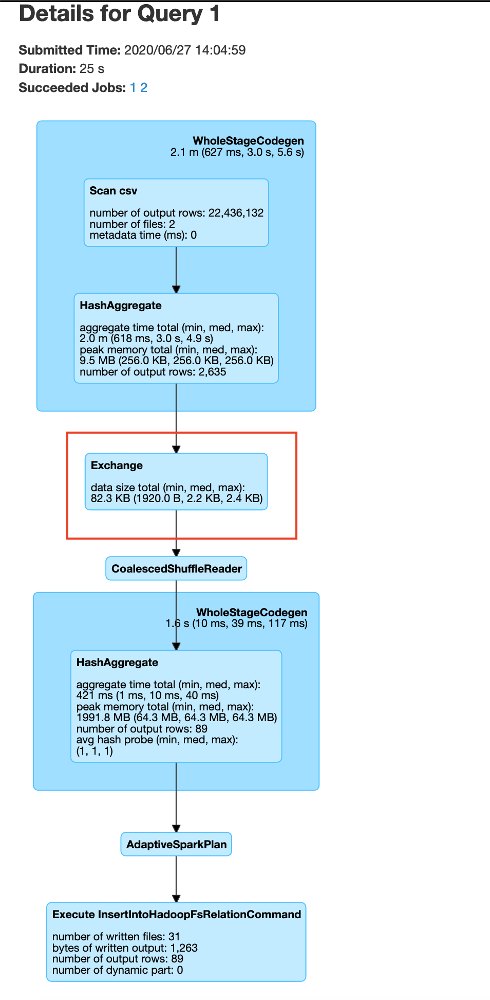
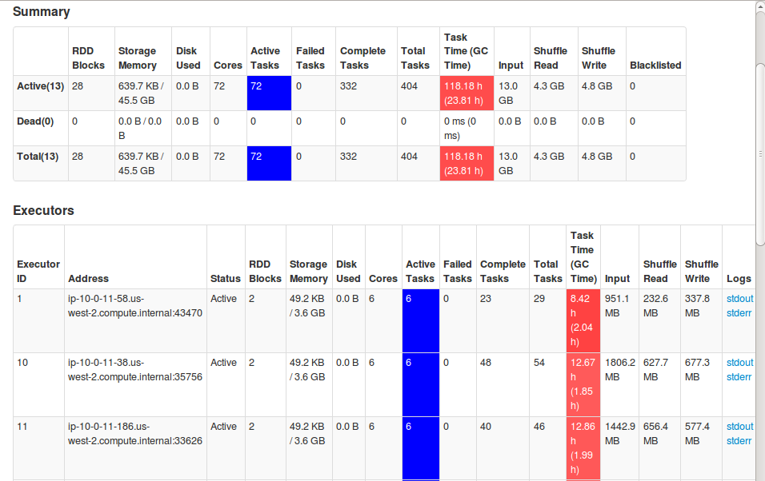
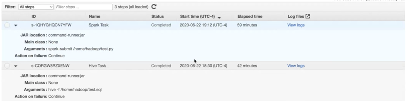
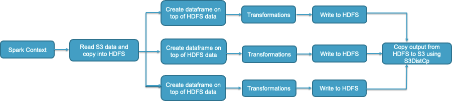
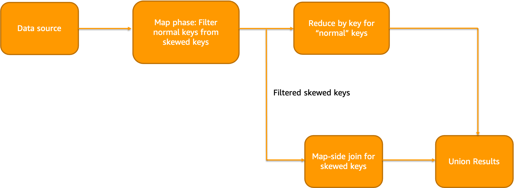

5.1 - Spark ¶
BP 5.1.1 - Determine right infrastructure for your Spark workloads ¶
Spark workloads may require different types of hardware for different job characteristics to ensure optimal performance. EMR supports several instance types to cover all types of processing requirements. While onboarding new workloads, start your benchmarking with general instance types like m5s or m6gs. Monitor the OS and YARN metrics from Ganglia and CloudWatch to determine the system bottlenecks at peak load. Bottlenecks include CPU, memory, storage and I/O. Once identified, choose the appropriate hardware type for your job’s needs.
- Memory-optimized instances like r5 and r4 are good candidates for memory intensive workloads. Spark jobs that cache large DataFrames, Datasets or RDDs, perform operations like joins and union on large tables, use a lot of internal or user-defined broadcast variables or accumulators, go through many GC cycles and perform massive shuffles (when dynamic allocation is disabled) are likely to be memory intensive. Following diagram shows YARN memory available percentage and aggregated OS memory utilization from Cloudwatch EMR namespace and Ganglia respectively.

- CPU-optimized instances like c5 and c4 are good candidates for CPU intensive workloads . Spark jobs involving complex aggregate operations involving many in-built arithmetic functions or UDFs and jobs that use a lot of LRU caches are likely to be CPU intensive. Following screenshot shows aggregated CPU utilization of the EMR cluster from Ganglia.

- General purpose instances like m5 and m4 are good candidates for a mix of CPU and memory intensive workloads. They are also great for benchmarking and onboarding your Spark applications. Following sheet outlines the CPU:Memory ratio of of 3 example instances instances at a similar price.
| Instance Type | Instance | EC2 price | EMR price | Cores | Memory in GiB | CPU:memory ratio |
|---|---|---|---|---|---|---|
| Compute | m5.4xlarge | $3.06 | 0.27 | 72 | 144 | 2 |
| Memory | m6g.4xlarge | $3.02 | 0.27 | 48 | 384 | 8 |
| General | m5.16xlarge | $3.07 | 0.27 | 64 | 256 | 4 |
- Storage-optimized instances like i3ens, d2 are good candidates for I/O intensive workloads. If your use case is CPU/memory bound but also consumes a lot of I/O, and demands high disk throughput and low read or write latencies from transient HDFS storage, you can consider using instances backed by SSD storage like r5ds, c5ds, m5ds etc.. For jobs that perform massive shuffles (when dynamic allocation is enabled), Spark external shuffle service will write the shuffle data blocks to the local disks of each node running executors.
- GPU instances such as p3 family for Spark ML and intensive analytical workloads like image processing. From EMR 6.2, you can also use Nvidia RAPIDS accelerator plugin to improve your GPU instance performance without any changes to your code or data processing pipelines.
Starting EMR 5.31+ and 6.1+, there is Graviton support (r6g, m6g, c6g.) which offers up to 15% improvement in performance and 30% reduction in cost based on our derived benchmarks. They are a great choice to replace your legacy instances to observe improved performance at a lower cost.

BP 5.1.2 - Choose the right deploy mode ¶
Spark offers two kinds of deploy modes called client and cluster deploy modes. Deploy mode determines where your Spark driver runs. Spark driver is the cockpit for your application. It hosts the SparkContext (or SparkSession) for your application. It keeps track of all tasks executed by the executors and the state of the executors via heartbeats. Driver also fetches the results from the executors running tasks. Choose the right deploy mode based on your workload requirements.
Client deploy mode¶
This is the default deploy mode for Spark applications in EMR. In this deploy mode, the driver process will be launched within your Spark client - whether you submit your job from EMR master node (using EMR step or spark-submit) or using a client external to EMR. Spark driver is a single point of failure. A failed driver JVM will not be relaunched in client deploy mode. Also, when client loses connectivity with YARN, your job will be killed.

Use this deploy mode if :- * You are running only one or two Spark applications at a time in a cluster. This deploy mode is not ideal if you are running multiple applications at the same time on the same cluster since all those drivers running on a single node can lead to resource contention. * You want to be more in control of your Spark driver configurations. In client mode, Spark driver resources will not compete with YARN resources and can be adjusted separately without affecting the resource procurement of your applications. * If you are running too many executors (1000+). Since Spark driver manages and monitors tasks and executors, too many executors will slow down the driver since they have to send heartbeats, poll task status etc. Since EMR allows you to specify a different instance type for master instance, you can choose a very powerful instance like z1d and allocate the memory and CPU resources to Spark drivers especially if you are running a very high number of executors. * If you want to print output to the console.
Cluster deploy mode¶
In cluster deploy mode, your Spark driver will be colocated within the Application Master (AM) container from YARN regardless of where you submit your Spark application from.

Use cluster deploy mode if :- * You are submitting multiple applications at the same time or have higher job or EMR step concurrency. Since drivers will be launched within the AM, for multiple applications, the driver resources will be spread across the cluster considering AM will be launched on one of the worker nodes. * If there are relatively fewer number of executors per application. i.e., the Spark driver process does not have to do intensive operations like manage and monitor from too many executors. * You are storing results in S3/HDFS and there is no need to print output to the console. * You want to specify detailed instructions on where AM runs. You can launch AMs on CORE partition or both CORE and TASK partitions based on where you want your AM and executors to launch. For example, you can run AM on only on-demand CORE nodes and executors only on spot task nodes. * If you want to relaunch a failed driver JVM. By default, YARN re-attempts AM loss twice based on property "spark.yarn.maxAppAttempts". You can increase this value further if needed. * If you want to ensure that termination of your client will not terminate your application. * If you want to return success from your client after job submission based on the property "spark.yarn.submit.waitAppCompletion".
Regardless of which deploy mode you choose, make sure that your driver Spark configs are tuned for your workload needs.
BP 5.1.3 - Use right file formats and compression type ¶
It is highly recommended that you use right file formats for optimal performance. Do not use legacy file formats like CSV, JSON, text files etc. since the read/write performance will much slower. It is highly recommended that you use columnar file formats like Parquet, ORC etc. Especially for Spark, Parquet would be the best choice.
When using Parquet file format, Spark will use EMRFSOutputCommitter which is an optimized file committer for writing Parquet data files to S3 from Spark. Also, using Parquet file format is great for schema evolution, filter push downs and integration with applications with transactional support like Apache Hudi, Iceberg etc.
Also, it’s recommended to use an optimal compression format. Avoid using unsplittable compression formats like GZIP. Since they are not splittable, when there is a large GZIP compressed file, it can only be processed by a single task/executor leading to OOM errors.

Use splittable compression formats like BZ2, LZO etc. Parquet uses Snappy compression by default. ORC uses ZLIB compression by default. Both compression types are good choices and you can continue to use defaults.

You can also apply columnar encryption using KMS.
sc.hadoopConfiguration.set("parquet.encryption.kms.client.class" ,"org.apache.parquet.crypto.keytools.mocks.InMemoryKMS")
// Explicit master keys (base64 encoded) - required only for mock InMemoryKMS
sc.hadoopConfiguration.set("parquet.encryption.key.list" ,"keyA:AAECAwQFBgcICQoLDA0ODw== , keyB:AAECAAECAAECAAECAAECAA==")
// Activate Parquet encryption, driven by Hadoop properties
sc.hadoopConfiguration.set("parquet.crypto.factory.class" ,"org.apache.parquet.crypto.keytools.PropertiesDrivenCryptoFactory")
// Write encrypted dataframe files.
// Column "square" will be protected with master key "keyA".
// Parquet file footers will be protected with master key "keyB"
squaresDF.write.option("parquet.encryption.column.keys" , "keyA:square").option("parquet.encryption.footer.key" , "keyB").parquet("/path/to/table.parquet.encrypted")
// Read encrypted dataframe files
val df2 = spark.read.parquet("/path/to/table.parquet.encrypted")
BP 5.1.4 - Partitioning ¶
Partitioning your data is very important if you are going to run your code or queries with filter conditions. Partitioning helps you arrange your data files into S3 prefixes based on the partition key. It helps minimize read/write access footprint i.e., you will be able to only read files from partition folder specified in your where clause - thus skipping a full read. Partitioning can also help if your data ingestion is incremental in nature. However, partitioning can reduce read throughput if you are performing full table scans.
You can choose your partition field based on :-
- Query pattern. i.e., if you find workloads use 1-2 columns frequently as filter fields more so than other columns, it is recommended to consider using them as partitioning field.
- Ingestion pattern. i.e., if you load data into your table once everyday, if you want to avoid re-writing historical data, you can partition your data based on date field (typically in YYYY-MM-DD format)
- Cardinality of the partitioning column. For partitioning, cardinality should not be too high.
- File sizes per partition. It is highly recommended that your individual file sizes within each partition is ~128 MB and not too small since that would be optimal for Spark executor JVM to process.
Also, number of shuffle partitions will determine the number of output files per partition.
df.repartition(400).write.partitionBy("datecol").parquet("s3://bucket/output/")
The above code will create maximum of 400 files per datecol partition. Repartition API alters number of shuffle partitions during runtime and partitionBy API determines the partition field(s). You can also control the number of shuffle partitions with the Spark property "spark.sql.shuffle.partitions". You can use repartition API to control the file size in destination. i.e., for merging smaller files. But for splitting large files, you can use the property "spark.sql.files.maxPartitionBytes".
Partitioning ensures that pruning takes place during reads and writes. Pruning makes sure that only necessary partition(s) are read from S3 or HDFS. Spark logical plan or DAG can be studied to ensure that pruning takes place while reading and writing to partitioned tables from Spark. It may look similar to below.
FileScan parquet default.dimension[Store#12,Date#13,Price#14,CPI#15] Batched: true, DataFilters: [isnotnull(Date#16), (Date#16 > 02–14–2022), isnotnull(Store#12)], Format: Parquet, Location: InMemoryFileIndex[dbfs:/user/hive/warehouse/dimension], PartitionFilters: [], PushedFilters: [IsNotNull(Date), GreaterThan(Date,02–14–2022), IsNotNull(Store)], ReadSchema: struct
FileScan parquet default.fact[Dept#22,Sales#23,Store#24,Date#25] Batched: true, DataFilters: [], Format: Parquet, Location: InMemoryFileIndex[dbfs:/user/hive/warehouse/fact/Store=12/Date=02–14–2022…, PartitionFilters: [isnotnull(Date#27), (Date#25 > 02–14–2022), isnotnull(Store#24), dynamicpruningexpression(Date#2…, PushedFilters: [], ReadSchema: struct
BP 5.1.5 - Tune driver/executor memory, cores and spark.sql.shuffle.partitions to fully utilize cluster resources ¶
Amazon EMR configures Spark defaults during the cluster launch based on your cluster's infrastructure (number of instances and instance types). EMR configured defaults are generally sufficient for majority of the workloads. However, if it is not meeting your performance expectations, we recommend you to tune Spark driver/executor configurations and see if you can achieve a better performance. Following are the general recommendations.
For a starting point, generally, its advisable to set spark.executor.cores to 4 or 5 and tune spark.executor.memory around this value. Also, when you calculate the spark.executor.memory, you need to account for the executor overhead which is set to 0.1875 by default (i.e., 18.75% of spark.executor.memory). For example, for a 2 worker node r4.8xlarge cluster, following will be the configurations.
Based on Task Configurations r4.8xlarge node has YARN memory of 241664 MB (based on the value of yarn.nodemanager.resource.memory-mb). The instance has 32 vCores. If we set spark.executor.cores as 4, we can run 8 executors at a time. So, the configurations will be following.
spark.executor.cores = 4 spark.executor.memory + (spark.executor.memory * spark.yarn.executor.memoryOverheadFactor) = (241664 MB / 8) = 30208 MB spark.executor.memory = 24544 MB (substituting default spark.yarn.executor.memoryOverheadFactor=0.1875)
If you have a cluster of 10 r4.8xlarge nodes, then totally, 80 executors can run with 24544 MB memory and 4 vCores each.
Please note that some jobs benefit from bigger executor JVMs (more cores assigned). Some jobs benefit from smaller but more number of executors. So, you can use the above formula to arrive at optimal values for your application. EMR Spark has a feature called maximizeResourceAllocation. Setting this property to true will lead to one fat JVM per node that uses all of the available cores in that instance. However, please note that this setting may not prove to be optimal all types of workloads. It is not recommended to set this property to true if your cluster is a shared cluster with multiple parallel applications or if your cluster has HBase.
After configuring the values, run a sample job and monitor the Resource Manager UI, ContainerPendingRatio and YARNMemoryAvailablePcnt Cloudwatch metrics to verify that the vCores and YARN memory are being fully utilized. Spark JMX metrics provides JMX level visibility which is the best way to determine resource utilization.
While using instance fleets, it is generally advisable to request worker nodes with similar vCore:memory ratio (for eg: requesting r4, r5 and r6gs in the same fleet). However, in some cases, in order to ensure capacity, you may have to diversify the instance type families as well in your request (for eg: requesting c5s, m5s and r5s in same fleet). EMR will configure driver/executor memory based on minimum of master, core and task OS memory. Generally, in this case, it is best to use the default configurations. However, if needed, you can fine tune the driver and executor configurations based on above principles. But in that case, you will need to take YARN memory and vCores of all the different instance families into consideration.
To provide an example, lets say you have requested a cluster with a core fleet containing following instances: r5.4xlarge, r5.12xlarge, c5.4xlarge, c5.12xlarge, m5.4xlarge, m5.12xlarge. All the 4xlarge instances in this fleet have 16 vCores and 12xlarge instances have 48 vCores. But the OS/YARN memory are different.
| Instance | YARN memory in MB |
|---|---|
| c5.4xlarge | 24576 |
| c5.12xlarge | 90112 |
| m5.4xlarge | 57344 |
| m5.12xlarge | 188416 |
| r5.4xlarge | 122880 |
| r5.12xlarge | 385024 |
Now, let us calculate executor memory after setting spark.executor.cores = 4 by starting with smallest YARN memory from the above table (c5.4xlarge) and dividing the YARN memory by spark.executor.cores to get the total container size -> 24576 / 4 = 6144.
spark.executor.memory = 6144 - (6144 * 0.1875) = 4992 MB
In default Spark implementation, with the above math, if you set 4992 MB as executor memory, then in r5.12xlarge, the resources will be under utilized even though you will not see the evidence of it from the Resource Manager UI. With the above configs, 77 executors can run in r5.12xlarge but there are only 48 vCores. So, even though 77 executors will have YARN resources allocated, they are only able to run 48 tasks at any given time which could be considered a wastage of JVMs.
In order to alleviate this issue, from EMR 5.32 and EMR 6.2, there is a feature called Heterogenous Executors which dynamically calculates executor sizes. It is defined by the property "spark.yarn.heterogeneousExecutors.enabled" and is set to "true" by default. Further, you will be able to control the maximum resources allocated to each executor with properties "spark.executor.maxMemory" and "spark.executor.maxCores". Minimum resources are calculated with "spark.executor.cores" and "spark.executor.memory". For uniform instance groups or for flexible fleets with instance types having similar vCore:memory ratio, you can try setting this property to false and see if you get better performance.
Similar to executors, driver memory and vCores can be calculated as well. The default memory overhead for driver container is 10% of driver memory. If you are using cluster deploy mode, then the driver resources will be allocated from one of the worker nodes. So, based on the driver memory/core configurations, it will take away some of the YARN resources that could be used for launching executors. If you are using client deploy mode and submitting jobs from EMR master node or a remote server, then driver resources are taken from the master node or remote server and will not affect the resources available for executor JVMs. The default driver memory (without maximizeResourceAllocation) is 2 GB. You can increase driver memory or cores for following conditions:
- Your cluster size is very large and there are many executors (1000+) that need to send heartbeats to driver.
- Your result size retrieved during actions such as printing output to console is very large. For this, you will also need to tune "spark.driver.maxResultSize".
You can use smaller driver memory (or use the default spark.driver.memory) if you are running multiple jobs in parallel.
Now, coming to "spark.sql.shuffle.partitions" for Dataframes and Datasets and "spark.default.parallelism" for RDDs, it is recommended to set this value to total number of vCores in your cluster or a multiple of that value. For example, a 10 core node r4.8xlarge cluster can accommodate 320 vCores in total. Hence, you can set shuffle partitions or parallelism to 320 or a multiple of 320 such that each vCore handles a Spark partition. It is not recommended to set this value too high or too low. Generally 1 or 2x the total number of vCores is optimal. Generally, each Spark shuffle partition should process ~128 MB of data. This can be determined by looking at the execution plan from the Spark UI.

From the above screenshot, you can see average size in exchange is 2.2 KB which means we can try to reduce "spark.sql.shuffle.partitions" to increase partition size during exchange (or shuffle).
Apart from this, if you want to use a tooling for configuration suggestions, consider using Sparklens and Dr. Elephant with Amazon EMR which will provide tuning suggestions based on metrics collected during your job run.
BP 5.1.6 - Use Kryo serializer by registering custom classes especially for Dataset schemas ¶
Spark uses Java Serializer by default. From Spark 2.0+, Spark internally uses Kryo Serializer when shuffling RDDs with simple types, arrays of simple types, or string type. It is highly recommended that you use Kryo Serializer and also register your classes in the application.
val spark = SparkSession
.builder
.appName("my spark application name")
.config(getConfig)
.config("spark.serializer", "org.apache.spark.serializer.KryoSerializer")
// use this if you need to increment Kryo buffer size. Default 64k
.config("spark.kryoserializer.buffer", "1024k")
// use this if you need to increment Kryo buffer max size. Default 64m
.config("spark.kryoserializer.buffer.max", "1024m")
/*
* Use this if you need to register all Kryo required classes.
* If it is false, you do not need register any class for Kryo, but it will increase your data size when the data is serializing.
*/
.config("spark.kryo.registrationRequired", "true")
.getOrCreate
If you do not specify classesToRegister, then there will be a Kryo conversion overhead which could impact performance. Hence, it is highly recommended to register classes in your application. Especially, if you are using Datasets, consider registering your Dataset schema classes along with classes used in Spark internally based on the data types and structures used in your program. An example provided below:
val conf = new SparkConf()
conf.registerKryoClasses(
Array(
classOf[org.myPackage.FlightDataset],
classOf[org.myPackage.BookingDataset],
classOf[scala.collection.mutable.WrappedArray.ofRef[_]],
classOf[org.apache.spark.sql.types.StructType],
classOf[Array[org.apache.spark.sql.types.StructType]],
classOf[org.apache.spark.sql.types.StructField],
classOf[Array[org.apache.spark.sql.types.StructField]],
Class.forName("org.apache.spark.sql.types.StringType$"),
Class.forName("org.apache.spark.sql.types.LongType$"),
Class.forName("org.apache.spark.sql.types.BooleanType$"),
Class.forName("org.apache.spark.sql.types.DoubleType$"),
classOf[org.apache.spark.sql.types.Metadata],
classOf[org.apache.spark.sql.types.ArrayType],
Class.forName("org.apache.spark.sql.execution.joins.UnsafeHashedRelation"),
classOf[org.apache.spark.sql.catalyst.InternalRow],
classOf[Array[org.apache.spark.sql.catalyst.InternalRow]],
classOf[org.apache.spark.sql.catalyst.expressions.UnsafeRow],
Class.forName("org.apache.spark.sql.execution.joins.LongHashedRelation"),
Class.forName("org.apache.spark.sql.execution.joins.LongToUnsafeRowMap"),
classOf[org.apache.spark.util.collection.BitSet],
classOf[org.apache.spark.sql.types.DataType],
classOf[Array[org.apache.spark.sql.types.DataType]],
Class.forName("org.apache.spark.sql.types.NullType$"),
Class.forName("org.apache.spark.sql.types.IntegerType$"),
Class.forName("org.apache.spark.sql.types.TimestampType$"),
Class.forName("org.apache.spark.sql.execution.datasources.FileFormatWriter$WriteTaskResult"),
Class.forName("org.apache.spark.internal.io.FileCommitProtocol$TaskCommitMessage"),
Class.forName("scala.collection.immutable.Set$EmptySet$"),
Class.forName("scala.reflect.ClassTag$$anon$1"),
Class.forName("java.lang.Class")
)
)
}
You can also fine tune the following Kryo configs :-
spark.kryo.unsafe - Set to false for faster serialization. This is not unsafer for same platforms but should not be used if your EMR cluster has a mix of AMD and intel types for example. spark.kryoserializer.buffer.max - Maximum size of Kryo buffer. Default is 64m. Recommended to increase but this property upto 1024m value should be below 2048m spark.kryoserializer.buffer - Initial size of Kryo's serialization buffer. Default is 64k. Recommended to increase up to 1024k.
BP 5.1.7 - Use appropriate garbage collector ¶
By default, EMR Spark uses Parallel Garbage Collector which works well in most cases. You can change the GC to G1GC if your GC cycles are slow since G1GC may provide better performance in some cases specifically by reducing GC pause times. Also, since G1GC is the default garbage collector since Java 9, you may want to switch to G1GC for forward compatibility.
Following is the spark configuration :-
[{
"classification": "spark-defaults",
"properties": {
"spark.executor.extraJavaOptions": "-XX:+UseG1GC -XX:+UnlockDiagnosticVMOptions -XX:+G1SummarizeConcMark -XX:InitiatingHeapOccupancyPercent=35 -verbose:gc -XX:+PrintGCDetails -XX:+PrintGCDateStamps -XX:OnOutOfMemoryError='kill -9 %p'",
"spark.driver.extraJavaOptions": "-XX:+UseG1GC -XX:+UnlockDiagnosticVMOptions -XX:+G1SummarizeConcMark -XX:InitiatingHeapOccupancyPercent=35 -verbose:gc -XX:+PrintGCDetails -XX:+PrintGCDateStamps -XX:OnOutOfMemoryError='kill -9 %p'"
},
"configurations": []
}]
You can also tune the GC parameters for GC performance. You can see the comprehensive list of parameters here for G1GC and here for ParallelGC. Some useful ones are below :-
-XX:ConcGCThreads=n -XX:ParallelGCThreads=n -XX:InitiatingHeapOccupancyPercent=45 -XX:MaxGCPauseMillis=200
You can also monitor GC performance using Spark UI. the GC time should be ideally <= 1% of total task runtime. If not, tune the GC settings or executor size. For example, we see below in the Spark UI that GC takes almost 25% of task runtime which is a poor GC performance.

BP 5.1.8 - Use appropriate APIs wherever possible ¶
When using spark APIs, try to go with the most optimal choice if your use case permits. Following are a few examples.
repartition vs coalesce¶
Both repartition and coalesce are used for changing the number of shuffle partitions. Repartition is used for both increasing and decreasing the shuffle partitions whereas coalesce is used for only decreasing the number of shuffle partitions. If your goal is to decrease the number of shuffle partitions, consider using coalesce instead of repartition. The reason is, repartition triggers a full shuffle but coalesce triggers only a partial shuffle and thus minimizes the amount of data shuffled by keeping a few nodes as receivers of shuffle data.
df.coalesce(1) //instead of df.repartition(1)
But please note that when you coalesce (or repartition) to a very small number, your JVM will process a lot of data which can lead to OOM issues or disk space issues due to shuffle spill.
groupByKey vs reduceByKey¶
Use reduceByKey instead of groupByKey wherever possible. With groupByKey, data will be transferred over the network and collected on the reduced workers. This can lead to OOMs since all data is sent across the network. Whereas, with reduceByKey, data is combined at partition-level, with only one output for one key at each partition to send over the network. reduceByKey required combining all your values into another value with the exact same type.
orderBy vs sortBy or sortWithinPartitions¶
orderBy does global sorting. i.e., all data is sorted in a single JVM. Whereas, sortBy or sortWithinPartitions does local sorting i.e., data is sorted within each partition but it does not preserve global ordering. Use sortBy or sortWithinPartitions if global sorting is not necessary - especially during writes. Try to avoid orderBy clause. Values can be aggregated across partitions in your queries if needed.
BP 5.1.9 - Leverage spot nodes with managed autoscaling ¶
Enable managed autoscaling for your EMR clusters. From EMR 5.32 and EMR 6.2 there have been optimizations made to managed scaling to make it more resilient for your Spark workloads. It is not recommended to use Spot with core or master nodes since during reclaimation event, your cluster could be terminated and you would need to re-process all the work. Try to leverage task instance fleets with many instance types per fleet with Spot since it would give both cost and performance gains. However, in this case, make sure that your output is being written directly to EMRFS since we will have fixed core node on-demand capacity.
Following policy defines max core nodes to 2 and we are requesting the core nodes to be on-demand as recommended. Rest of the nodes are Spot task nodes.

Following experimentation illustrates the performance gains using Managed Autoscaling.

For Spark workloads, we observed ~50% gains compared to custom autoscaling clusters.

Please note that the results may vary based on your workloads. Also, if your workloads are SLA sensitive and fault intolerant, it is best to use on-demand nodes for task fleets as well since reclaimation of Spot may lead to re-computation of one or many stages or tasks.
BP 5.1.10 - For workloads with predictable pattern, consider disabling dynamic allocation ¶
Dynamic allocation is enabled in EMR by default. It is a great feature for following types of workloads:
- Workloads processing variable amount of data
- When your cluster uses autoscaling
- Dynamic processing requirements or unpredictable workload patterns
- Streaming and ad-hoc workloads
- When your cluster runs multiple applications
- Your cluster is long-running
The above would cover at least 95% of the workloads run by our customers today. However, there are a very few cases where:
- Workloads have a very predicatable pattern
- Amount of data processed is predictable and consistent throughout the application
- Cluster runs Spark application in batch mode
- Clusters are transient and are of fixed size (no autoscaling)
- Application processing is relatively uniform. Workload is not spikey in nature.
For example, you may have a use case where you are collecting weather information of certain geo regions twice a day. In this case, your data load will be predictable and you will run two batch jobs per day - one at BOD and one at EOD. Also, you may use two transient clusters to process these two jobs.
For such use cases, you can consider disabling dynamic allocation along with setting the precise number and size of executors and vCores like below.
[{
"classification": "spark-defaults",
"properties": {
"spark.dynamicAllocation.enabled": "false",
"spark.executor.instances": "12",
"spark.executor.memory": "8G",
"spark.executor.cores": "4"
},
"configurations": []
}]
Please note that if you are running more than one application at a time, you may need to tweak the configurations to allocate resources to them. By disabling dynamic allocation, Spark driver or YARN Application Master does not have to calculate resource requirements at runtime or collect certain heuristics. This may save anywhere from 5-10% of job execution time. However, you will need to carefully plan Spark executor configurations in order to ensure that your entire cluster is being utilized. If you choose to do this, then it is better to disable autoscaling since your cluster only runs a fixed number of executors at any given time unless your cluster runs other applications as well.
However, only consider this option if your workloads meet all the above criteria since otherwise your jobs may fail due to lack of resources or you may end up wasting your cluster resources.
BP 5.1.11 - Leverage HDFS as temporary storage for I/O intensive workloads ¶
Many EMR users directly read and write data in S3. This is generally suited for most type of use cases. However, for I/O intensive workflows, this approach could be slower - especially for heavy writes.

For very I/O intensive workloads or for workloads where the temporary transform data is much larger than the final output, you can leverage HDFS as temporary storage and then use S3DistCp to copy the data into final location. For example, for a fraud detection use case where you could be performing transforms on TBs of data but your final output report is only a few KBs, in such scenarios, leveraging HDFS will give you better performance and also helps you avoid S3 throttling.

Following is a typical application of HDFS for transient storage. A Spark context could be shared between multiple workflows, wherein, each workflow comprising of multiple transformations. After all transformations are complete, each workflow would write the output to HDFS location. Once all transforms are complete, you can save the final output to S3 either using S3DistCp or SDK determined by the number of files and output size.

However, while using this architecture, please make sure that you are sizing your HDFS properly to prevent job failures due to lack of storage space when the job is running. Refer to best practice BP 2.13 in Reliability section.
Even if you are using S3 directly to store your data, if your workloads are shuffle intensive, use storage optimized instances or SSD/NVMe based storage (for example: r5d’s and r6gd’s instead of r5s and r6g’s). This is because dynamic allocation will use Spark external shuffle service that spills data to local disks when the executor JVM cannot hold any more shuffle data. This process is a very I/O intensive one and will benefit from instance types that offer high disk throughput.
BP 5.1.12 - Spark speculation with EMRFS ¶
In Hadoop/Spark, speculative execution is a concept where a slower task will be launched in parallel on another node using a different JVM (based on resource availability). Whichever task completes first (original or speculated task), will write the output to S3. This works well for HDFS based writes. However, for EMRFS, turning on spark.speculation may lead to data loss or duplicate data. By default, “spark.speculation” is turned off. Only enable spark.speculation if you are doing one of the following.
- Writing Parquet files to S3 using EMRFSOutputCommitter
- Using HDFS as temporary storage (in an understanding that final output will be written to S3 using S3DistCp)
- Using HDFS as storage
Do not enable spark.speculation if none of the above criteria is met since it will lead to incorrect or missing or duplicate data in your destination.
You can consider enabling spark.speculation especially while running workloads on very large clusters, provided you are performing one of the above actions. Reason is that, due to some hardware issues, one node out of 500+ nodes could be slower and may run tasks slowly even if data size being processed is the same as other tasks. Chances of this happening are higher in larger clusters. In that case, spark.speculation will help relaunch those slow tasks on other nodes providing SLA consistency (as long as the above criteria are met).
You can set spark.speculation to true in spark-defaults or pass it as a command line option (--conf spark.speculation="true").
[{
"classification": "spark-defaults",
"properties": {
"spark.speculation": "true"
},
"configurations": []
}]
Please do not enable spark.speculation if you are writing any non-Parquet files to S3 or if you are writing Parquet files to S3 without the default EMRFSOutputCommitter.
BP 5.1.13 - Data quality and integrity checks with deequ ¶
Spark and Hadoop frameworks do not inherently guarantee data integrity. While it is very rare, you may observe some data corruption or missing data or duplicate data due to unexpected errors in the hardware and software stack. It is highly recommended that you validate the integrity and quality of your data atleast once after your job execution. It would be best to check data correctness in multiple stages of your job - especially if your job is long-running.
In order to check your data integrity, consider using Deequ for your Spark workloads. Following are the blogs that can help you get started with Deequ for Spark workloads.
Test data quality at scale with Deequ | AWS Big Data Blog Testing data quality at scale with PyDeequ | AWS Big Data Blog
Sometimes, you may have to write your own validation logic. For example, if you are doing a lot of calculations or aggregations, you will need to compute twice and compare the two results for accuracy. In other cases, you may also implement checksum on data computed and compare it with the checksum on data written to disk or S3. If you see unexpected results, then check your Spark UI and see if you are getting too many errors from a single node by sorting the Task list based on "Status" and checking for error message of failed tasks. If you are seeing too many random unexpected errors such as "ArrayIndexOutOfBounds" or checksum errors from a single node, then it may be possible that the node is impaired. Exclude or terminate this node and re-start your job.
BP 5.1.14 - Use DataFrames wherever possible ¶
WKT we must use Dataframes and Datasets instead of RDDs since both have several enhancements over RDDs like catalyst optimizer and adaptive query execution. But between Datasets and Dataframes Dataframes perform certain optimizations during DAG creation and execution. These optimizations can be identified by inspecting the query plan. For example -
- Datasets perform many serializations and deserializations that Dataframes do not perform.
- Dataframes perform better push downs. For example, if there is a filter operation, that is applied early on in the query plan so that the data transfer in-memory is reduced.
- Dataframes avoid unnecessary exchanges. For example, distinct after join will be accomplished with two exchanges in datasets but with only one exchange in DFs.
Only downside to using dataframes instead of datasets is that, with dataset, you generally define schema in class.
case class DeviceIoTData (
battery_level: Long,
c02_level: Long,
cca2: String,
cca3: String,
cn: String,
device_id: Long,
device_name: String,
humidity: Long,
ip: String,
latitude: Double,
longitude: Double,
scale: String,
temp: Long,
timestamp: Long
)
This provides you type-safety. When there are changes to your schema, it can be consolidated and tracked in a single class. This can be considered as an industry standard. While using Spark DDataframes, you can achieve something similar by maintaining the table columns in a list and fetching from that list dynamically in your code. But this requires some additional coding effort.
BP 5.1.15 - Data Skew ¶
Data skew can significantly slow down the processing since a single JVM could be handling a large amount of data. In this case observed in Spark UI, a single task is processing 25 times more data than other tasks. This can inevitably lead to slowness, OOMs and disk space filling issues.

When there is a data skew, it is best handled at code level since very little can be done in terms of configuration. You can increase JVM size or use one fat executor per node in order to prevent OOMs to the best of ability. But this will impact other tasks and also will not improve your job performance since one task uses only one vCPU.
Following are some of the common strategies to mitigate data skew at code level.
Salting¶
Salting is one of the most common skew mitigation technique where you add a "salt" to the column say "col1" that is skewed. You can split it into multiple columns like "col1_0","col1_1","col1_2" and so on. As number of salts increase, the skew decreases i.e., more parallelism of tasks can be achieved.
Original data

Salted 4 times

Salted 8 times

A typical Salting workflow looks like below:

For example, a salt column is added to the data with 100 randomized salts during narrow transformation phase (map or flatMap type of transforms).
n = 100
salted_df = df.withColumn("salt", (rand * n).cast(IntegerType))
Now, aggregation is performed on this salt column and the results are reduced by keys
unsalted_df = salted_df.groupBy("salt", groupByFields).agg(aggregateFields).groupBy(groupByFields).agg(aggregateFields)
Similar logic can be applied for windowing functions as well.
A downside to this approach is that it creates too many small tasks for non-skewed keys as well which may have a negative impact on the performance.
Isolated Salting¶
This is an approach where salting is applied to only subset of the keys. If 80% or more data belongs to one field, isolated salting approach could be considered (for eg: skew due to NULL columns). In narrow transformation phase, we will isolate the skewed column. In the wide transformation phase, we will isolate and reduce the heavily skewed column after salting. Finally, we will reduce other values without the salt and merge the results.
Isolated Salting workflow looks like below:

An example code looks like below:
val count = 4
val salted = df.withColumn("salt", when('col === "A", rand(1) * count cast IntegerType) otherwise 0)
val replicaDF = skewDF
.withColumn("replica", when('col === "A", (0 until count) toArray) otherwise Array(0))
.withColumn("salt", explode('replica'))
.drop('replica')
val merged = salted.join(replicaDF, joinColumns :+ "salt")
Isolated broadcast join¶
In this approach, smaller lookup table is broadcasted across workers and joined in map phase itself. Thus, reducing the amount of data shuffles. Similar to last approach, skewed keys are separated from normal keys. Then, we reduce the ”normal” keys and perform map-side join on isolated ”skewed” keys. Finally, we can merge the results of skewed and normal joins
Isolated map-side join workflow looks like below:

An example code looks like below:
val count = 8
val salted = skewDF.withColumn("salt", when('col === "A", rand(1) * count cast IntegerType) otherwise 0).repartition('col', 'salt') // Re-partition to remove skew
val broadcastDF = salted.join(broadcast(sourceDF), "symbol")
Hashing for SparkSQL queries¶
While running SparkSQL queries, you may have seen that it runs out of memory sometimes due to skew. Especially, this could be seen for windowing queries with a skew.
Following could be an example query with a skew.
select *, ROW_NUMBER() OVER (partition by l_orderkey order by l_orderkey) AS row_num FROM testdb.skewlineitem
Considering there is a skew in l_orderkey field, we can split the above query into 4 hashes.
select * from (select *, ROW_NUMBER() OVER (partition by l_orderkey order by l_orderkey) AS row_num FROM testdb.skewlineitem where cast(l_orderkey as integer)%4 = 1
union
select *, ROW_NUMBER() OVER (partition by l_orderkey order by l_orderkey ) AS row_num FROM testdb.skewlineitem where cast(l_orderkey as integer)%4 = 2
union
select *, ROW_NUMBER() OVER (partition by l_orderkey order by l_orderkey ) AS row_num FROM testdb.skewlineitem where cast(l_orderkey as integer)%4 = 3
union
select *, ROW_NUMBER() OVER (partition by l_orderkey order by l_orderkey ) AS row_num FROM testdb.skewlineitem where cast(l_orderkey as integer)%4 = 4 )
limit 10;
If the values are highly skewed, then salting approaches should be used instead since this approach will still send all the skewed keys to a single task. This approach should be used to prevent OOMs quickly rather than to increase performance. The read job is re-computed for the number of sub queries written.
BP 5.1.16 - Use right type of join ¶
There are several types of joins in Spark. Some are more optimal than the other based on certain considerations.
Broadcast Join¶
Broadcast joins are the most optimal options
Shuffle Hash Join¶
Sort Merge Join¶
Broadcast Nested Loop Join¶
BP 5.1.17 - Configuring Spark Executor Blacklist ¶
BP 5.1.18 - Configure observability ¶
Choose an observability platform based on your requirements.
BP 5.1.19 - Debugging and monitoring Spark applications ¶
BP 5.1.20 - Common Errors ¶
- Avoid 503 slow downs
- For mitigating S3 throttling errors, consider increasing fs.s3.maxRetries in emrfs-site configuration. By default, it is set to 15 and you may need to increase it based on your workload needs.
- You can also increase the multipart upload threshold in EMRFS. Default value at which MPU triggers is 128 MB.
[{
"classification": "emrfs-site",
"properties": {
"fs.s3.maxRetries": "20",
"fs.s3n.multipart.uploads.split.size": "268435456"
},
"configurations": []
}]
- Consider using Iceberg tables’ ObjectStoreLocationProvider to store data under [0*7FFFFF] prefixes and thus, help Amazon S3 learn write pattern to scale accordingly.
CREATE TABLE my_catalog.my_ns.my_table
( id bigint,
data string,
category string)
USING iceberg OPTIONS
( 'write.object-storage.enabled'=true,
'write.data.path'='s3://my-table-data-bucket')
PARTITIONED BY (category);
Your S3 files will be arranged under MURMUR3 hash prefixes like below.
2021-11-01 05:39:24 809.4 KiB 7ffbc860/my_ns/my_table/00328-1642-5ce681a7-dfe3-4751-ab10-37d7e58de08a-00015.parquet
2021-11-01 06:00:10 6.1 MiB 7ffc1730/my_ns/my_table/00460-2631-983d19bf-6c1b-452c-8195-47e450dfad9d-00001.parquet
2021-11-01 04:33:24 6.1 MiB 7ffeeb4e/my_ns/my_table/00156-781-9dbe3f08-0a1d-4733-bd90-9839a7ceda00-00002.parquet
-
If using Iceberg is not an option and if above approaches don’t resolve the issue, you can create an AWS support case to partition your S3 prefixes. But the prefix pattern needs to be known in advance for eg: s3://bucket/000-fff/ or s3://bucket/
/ -
Increase event queue size and heartbeat interval for large number of executors
- If the size of “dropped events
-
Increase HADOOP, YARN and HDFS heap sizes for intensive workflows
-
Use spark.yarn.archive to avoid compressing dependencies especially for high concurrency workloads